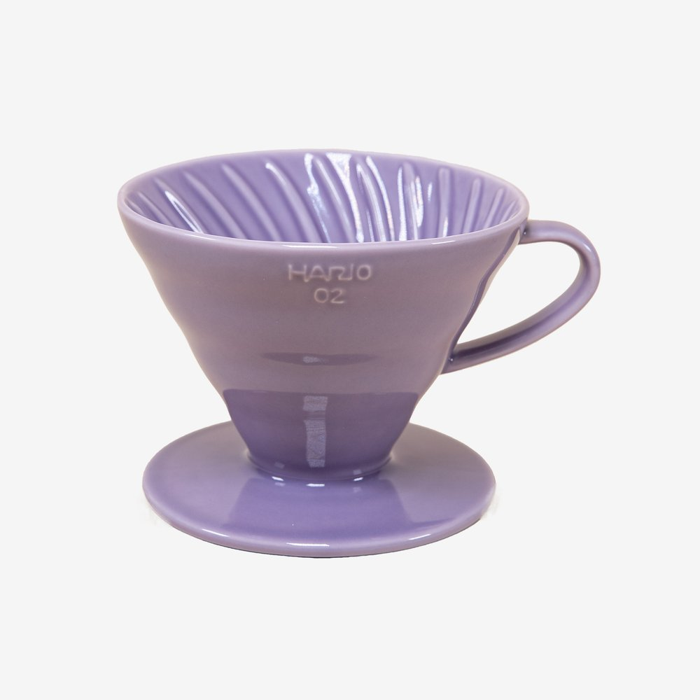

THE ULTIMATE V60 TECHNIQUE BY JAMES HOFFMAN

What you'll need
- Hario V60 Ceramic Coffee Dripper
- Hario v60 Paper Coffee Filter
- 30g Coffee: Ground medium
- Coffee server
- Gooseneck Kettle
- Water
- Scale
Set-Up
- Start by filling up your kettle and setting it to boil.
- Rinse the paper filter with the now boiled water, ensuring that it is
fully saturated.
- Grind your 30g of coffee to a medium consistency.
- Position your V60 coffee dripper on top of your coffee server.
Ensure that the server will hold more than 500g of coffee to avoid a spill.
Brew Instructions
- Add 30g of ground coffee to the V60. With your finger, create a small
well in the middle of the grounds.
- Start the timer and add 60g of water to bloom the coffee. Pick up and
swirl the coffee 5 times.
- At the 45 second mark, continue pouring until the scale reads 300g.
Aim to complete this pour within 30 seconds, finishing at the 1:15 mark.
(Hoffman recommends a flow rate of 8g per second if possible.)
- At the 1:15 minute mark, complete the pour by pouring until the scale reads 500g.
- At the 1:45 minute mark, use the spoon to stir once clockwise and once anti-clockwise,
knocking off the grounds from the sides of the V60.
- After letting the V60 drain a little, give it 3 more swirls.
- Allow the water to drip through the grounds entirely,
ideally finishing by the 3:30 mark. Remove the filter and serve.
- Enjoy